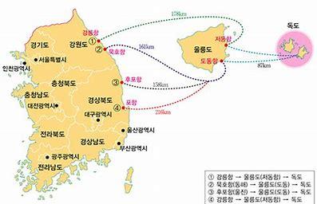

독도에 대한 정부 입장
정부 기본입장
우리 영토인 근거
||
독도의 지리정보
||
자료실
ID
PW

관계 정보
일본에서는 이 섬이 한국 영토가 아니라 시마네 현 오키 군 오키노시마 정(오키 제도)에 딸린 섬 다케시마(竹島)며 대한민국이 강제 점령하고 있으니 돌려받아야 한다고 주장한다. 이로 말미암아 벌어지는 외교 분쟁이 유명하다.
울릉도 동남쪽 87.4㎞ 바다 위에 있는 바위섬들로, 울릉도의 고지대에서 맨눈으로 볼 수 있는 대한민국 최동단에 있는 섬이다. 대한민국 실효통치 지역(남한)은 물론, 한반도 본토에서 가장 멀리 떨어진 섬이다.